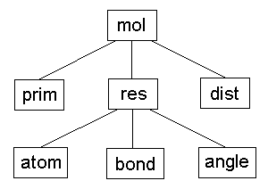

When traversing the currently selected items, the program will also use this hierarchy, and only traverse deeper into selected items. Because of the automatic selection of items higher in the hierarchy, this is normally transparent to the user. However, if you e. g. first select an atom, and then deselect the corresponding residue, the atom will effectively be deselected.
One way of looking at this mechanism is that selection proceeds upwards in the hierarchy (selects items that are higher), while deselection proceeds downwards (deselects items that are lower).
The hierarchy also affects how values and properties can be accessed in expressions. When an expression is evaluated for an item, the values and properties of items higher in the hierarchy can be accessed with the syntax item.name. For bonds, distances and angles, it is also possible to access the values of the atoms involved. The following table gives a full list of which related items can be accessed from a given kind of item.
item related description res mol molecule of residue atom res residue of atom atom mol molecule of atom bond res residue of bond bond mol molecule of bond bond atom1 first atom of bond bond atom2 second atom of bond bond res1 residue of first atom of bond bond res2 residue of second atom of bond angle res residue of dihedral angle angle mol molecule of dihedral angle angle atom1 first atom of dihedral angle angle atom2 second atom of dihedral angle angle atom3 third atom of dihedral angle angle atom4 fourth atom of dihedral angle dist mol molecule of distance dist atom1 first atom of distance dist atom2 second atom of distance dist res1 residue of first atom of distance dist res2 residue of second atom of distance dist mol1 molecule of first atom of distance dist mol2 molecule of second atom of distance prim mol molecule of primitive (except for title)
If the item type after the predicate is lower in the hierarchy than the current item, the evaluation will traverse downwards in the hierarchy, and evaluate the expression in parantheses for each of the desired items. E. g. if an expression for a residue is evaluated, and exists atom(expression) is encountered, this expression will be evaluated for all atoms of the residue. It must have a boolean result, the whole expression will be true if at least one of the partial expressions evaluated for the atoms yields true.
If the item type after the predicate is higher in the hierarchy than the current item, the evaluation will traverse upwards in the hierarchy until the parent of the item is encountered. From there on, the evaluation will be performed as described in the previous chapter. E. g. if an expression for an atom is evaluated, and exists bond(expression) is encountered, this expression will be evaluated for all bonds that the atom is part of. The whole expression will be true if all of the partial expressions evaluated for the bonds yield true.
The standard macros contain a few examples of using predicates. mean_sc.mac contains the following commands:
The first command is used to define the property well_def for well defined residues, specified as residues that have no heavy atoms with B factors larger than 1.0. The second command then uses this property to select the CA and heavy side chain atoms of all these well defined residues.DefPropRes 'well_def' '! exists atom(heavy & bfactor > 1.0)' SelectAtom 'res.well_def & (ca | heavysc)'
The following command in pdb_charge.mac selects all ASP residues that do not have an HD2 atom:
SelectRes 'name = "ASP" & ! exists atom(name = "HD2")'
Reto Koradi, kor@mol.biol.ethz.ch